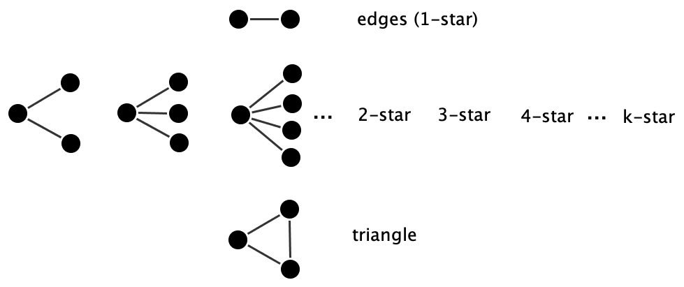
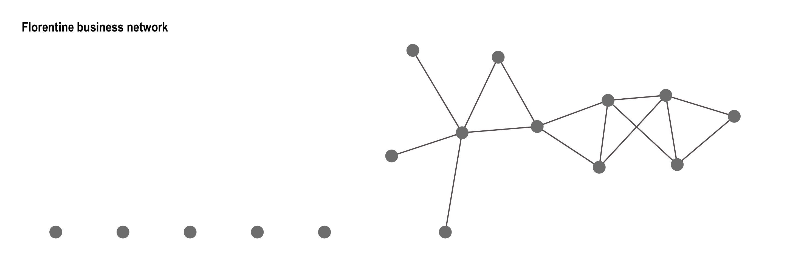
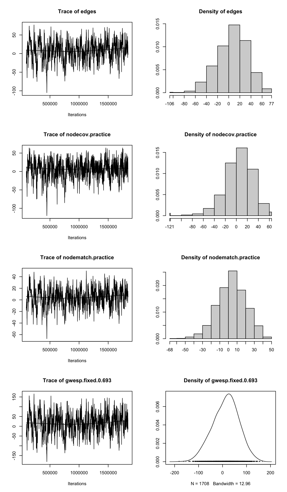
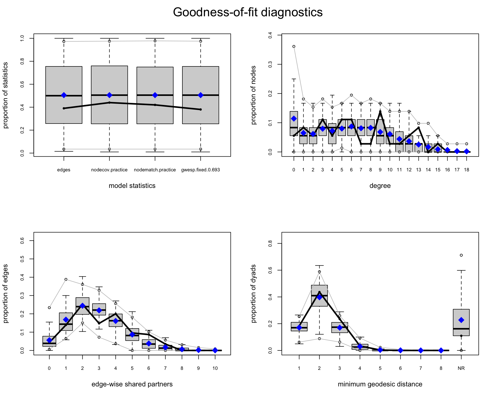
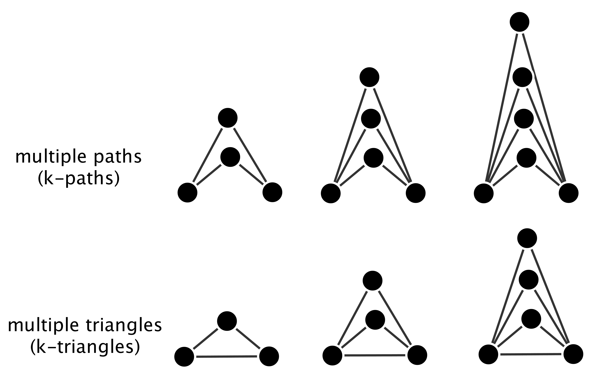
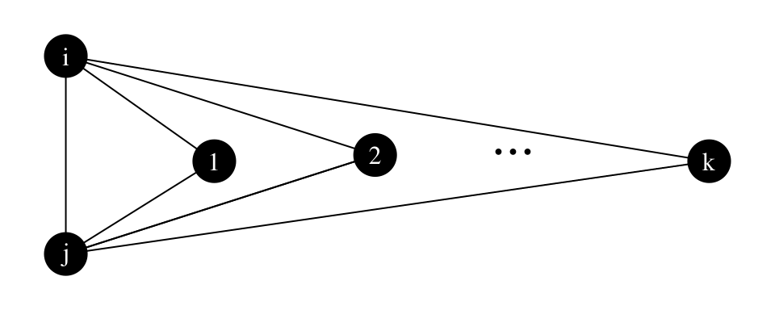

library(statnet)
library(intergraph)
library(igraph)
library(ggraph)
library(graphlayouts)
library(networkdata)
library(tidyverse)18 Exponential Random Graph Models (ERGMs)
So far, the models we’ve considered have treated tie formation as mostly random or locally constrained: ties are formed with fixed probabilities (\(G(n, p)\)), rewired at random (small-world), or arranged to match node degrees (configuration model). However, real-world networks are shaped by richer and more structured processes. People do not form ties independently or at random; they are influenced. For example, two people who share a common friend may be more likely to form a tie themselves (triadic closure), or individuals may be more likely to reciprocate a connection that is initiated by someone else. These kinds of dependencies are central to many social theories, and they give rise to complex patterns of self-organization in networks.
To capture these processes, we need a more flexible modeling framework that allows for:
- Multiple network features to be modeled simultaneously
- Direct specification of tie dependencies
- Testing of competing social mechanisms
This leads us to models that are built around network configurations, i.e., small, interpretable patterns of ties (such as mutual ties, stars, and triangles) that collectively describe the structure of the network. These configurations are often nested, meaning they build on one another hierarchically, and they can represent competing explanations for the observed structure. For instance, both reciprocity and popularity could explain why a node has many incoming ties, but these explanations imply different underlying processes.
Exponential Random Graph Models (ERGMs) provide a flexible way to model these kinds of patterns. Instead of assuming each edge forms independently, ERGMs allow the probability of a tie to depend on what else is happening in the network. For example, the likelihood of a tie forming between two nodes may increase if they share mutual connections (triadic closure), or decrease if one node is already connected to many others (crowding out).
By explicitly modeling such configurations, we gain not only better empirical fit but also the ability to test theoretical hypotheses about the generative processes that shape real-world networks.
18.1 Packages Needed for this Chapter
18.2 ERGM Modeling Outline
Exponential Random Graph Models (ERGMs) are a powerful family of statistical models for analyzing and simulating social networks. Unlike simpler random graph models, ERGMs are designed to capture the complex dependencies that often characterize real-world networks (such as reciprocity, transitivity, or clustering) by explicitly modeling how the presence of one tie can affect the likelihood of others.
The core idea is as follows. ERGMs specify a probability distribution over the set of all possible networks with a given number of nodes. The probability of observing a particular graph \(G\) is defined as:
\[ P(G) = \frac{1}{\kappa} \exp\left( \sum_{k=1}^{K} \theta_k \cdot s_k(G) \right) \]
where
- \(s_k(G)\) is a network statistic that counts a specific configuration (e.g., number of edges, mutual ties, triangles).
- \(\theta_k\) is the parameter associated with statistic \(s_k(G)\); it tells us how strongly that configuration influences tie formation.
- \(\kappa\) is a normalizing constant ensuring that all possible graphs sum to a probability of 1: \[ \kappa = \sum_{G'} \exp\left( \sum_{k=1}^{K} \theta_k \cdot s_k(G') \right) \]
This formulation makes clear that networks with more of the structures positively weighted by \(\theta_k\) are more probable. For instance, a large positive \(\theta_{\text{mutual}}\) implies that the observed network contains more reciprocated ties than expected by chance.
In general, we interpret the parameters as follows:
- A positive \(\theta_k\) means that the corresponding configuration (e.g., triangles) is overrepresented in the observed network relative to what is expected by chance.
- A negative \(\theta_k\) indicates that the configuration is underrepresented relative to what is expected by chance.
- A value of \(\theta_k = 0\) implies that the configuration occurs at chance levels.
The statistics \(s_k\) are network configurations. As mentioned, ERGMs rely on small, interpretable network configurations to explain structure. These include:
- Edges: baseline tendency for tie formation (controls overall density)
- Mutual: reciprocity in directed networks
- Triangles: clustering or transitivity (friends of friends)
- Stars: centralization or popularity (many ties to a node)
- Homophily: ties between nodes with similar attributes
Each of these configurations reflects a hypothesized mechanism that may drive the evolution of network structure. We formalize some of the standard statistics in the following.
In the following section, we will move through four generations of dependence assumptions yielding different ERGM specifications with statistics (network configurations) that are included in the model.
TipSpecifying an ERGM in R
An ERGM is specified using a formula that defines the network structure and any covariates to be included. The ergm() function takes a network object on the left-hand side and a set of model terms on the right-hand side.
Here is an example model including edge density, a node-level covariate, homophily on an attribute, and a structural dependency term (gwesp).
ergm(network_object ~ model_terms)where model_terms represent structural configurations or covariate effects, e.g., edges, triangles, mutual, etc. For a full list of available statistics in the ergm package you can check.
?ergmTerm18.2.1 Model Specification
18.2.1.1 Dyadic Independence: Edges and Homophily
To begin working with exponential random graph models (ERGMs), we first need to understand how models are specified and what kinds of network structures they describe. In this section, we introduce the simplest possible ERGM, one that assumes Bernoulli dependence, and show how it connects to the familiar \(G(n, p)\) model. This first step lays the foundation for more complex ERGMs that incorporate structural dependencies.
The Bernoulli ERGM assumes that all possible edges form independently of one another. In other words, the probability that a tie exists between nodes \(i\) and \(j\) is unrelated to whether other ties are present elsewhere in the network. This is a very strong assumption and one that is often unrealistic in practice, but it is useful as a baseline.
Let \(Y_{ij}\) be a binary random variable indicating the presence (\(1\)) or absence (\(0\)) of a tie between nodes \(i\) and \(j\). The full graph \(G\) can then be represented by its adjacency matrix \(Y\), where \(Y_{ij}\) encodes the tie between \(i\) and \(j\).
In the general formulation of an exponential random graph model, one could imagine assigning a different parameter \(\theta_{ij}\) to every possible tie \((i, j)\) in the network. This would allow the model to express highly specific tendencies for each dyad. The probability of observing a network \(G\) under this formulation would be:
\[ P(G) = \frac{1}{\kappa} \exp\left( \sum_{i<j} \theta_{ij} y_{ij} \right) \]
However, this model quickly becomes infeasible because it would require estimating a separate parameter for every possible edge, a number that grows quadratically with the number of nodes.
To make the model estimable and interpretable, ERGMs rely on the homogeneity assumption: the effect of a given configuration (such as an edge, triangle, or mutual tie) is the same wherever it appears in the network. That is, all instances of the same configuration share a single global parameter. For the Bernoulli ERGM, this means:
\[ \theta_{ij} = \theta \quad \text{for all } (i, j) \]
Applying this assumption simplifies the model considerably:
\[ P(G) = \frac{1}{\kappa} \exp\left( \theta \sum_{i<j} y_{ij} \right) = \frac{1}{\kappa} \exp(\theta \cdot L) \]
Here, \(L\) is the total number of edges in the network, \(\theta\) is a single parameter that governs the overall probability of tie formation, and \(\kappa\) is the normalizing constant ensuring all probabilities sum to 1.
This structure implies that each potential tie forms independently with the same probability, much like in a \(G(n, p)\) random graph. Here, the parameter \(\theta\) governs the log-odds of a tie between any two nodes. More formally, the relationship between \(\theta\) and the tie probability \(p\) (i.e., the density of the network) is:
\[ \theta = \log\left( \frac{p}{1 - p} \right) \quad \Leftrightarrow \quad p = \frac{e^\theta}{1 + e^\theta} \]
This means that:
- When \(\theta = 0\), the expected density is \(p = 0.5\)
- When \(\theta < 0\), the expected density is less than 0.5 (a sparse network)
- When \(\theta > 0\), the expected density is greater than 0.5
So, the edge parameter directly controls the overall density of the network. In practice, real-world social networks tend to be sparse, so \(\theta\) is typically negative. This relationship also means that if you estimate a Bernoulli ERGM and obtain an edge coefficient \(\hat{\theta}\), you can compute the implied expected density using:
\[ \hat{p} = \frac{e^{\hat{\theta}}}{1 + e^{\hat{\theta}}} \]
This makes the edge parameter easy to interpret: it is just the logit-transformed density.
NoteNote: \(G(n, p)\) as a Special Case of ERGM
The Bernoulli ERGM is structurally identical to the \(G(n, p)\) model, with the relationship:
- \(\theta = 0\) → expected density \(p = 0.5\)
- \(\theta > 0\) → expected density \(p > 0.5\)
- \(\theta < 0\) → expected density \(p < 0.5\)
However, this does not hold in general (if the ERGM contains other statistics).
Put differently, the \(G(n, p)\) random graph model is actually a special case of an ERGM. It includes only one term: the number of edges.
In ERGMs, a parameter estimate is considered statistically significant (by convention) if the absolute value of the estimate is greater than approximately twice its standard error (i.e., \(|\hat{\theta}| > 2 \cdot \text{SE}\)). This rule of thumb suggests that the corresponding network feature (such as homophily or reciprocity) is unlikely to have arisen by chance, and is therefore meaningfully associated with the observed pattern of tie formation.
Example: Coleman Friendship
To demonstrate the Bernoulli ERGM, we fit the model to the Coleman high school friendship network used in Chapter 16. However, here we convert the graph object into an adjacency matrix since the ergm response argument needs to be a network object or a matrix that can be coerced to a network object.
data("coleman")
coleman_g <- coleman[[1]]
# Convert to adjacency matrix
coleman_mat <- as_adjacency_matrix(coleman_g, sparse = FALSE)
# Fit Bernoulli ERGM with only the edge term
model_bern <- ergm(coleman_mat ~ edges)
summary(model_bern)Call:
ergm(formula = coleman_mat ~ edges)
Maximum Likelihood Results:
Estimate Std. Error MCMC % z value Pr(>|z|)
edges -3.02673 0.06569 0 -46.08 <1e-04 ***
---
Signif. codes: 0 '***' 0.001 '**' 0.01 '*' 0.05 '.' 0.1 ' ' 1
Null Deviance: 7286 on 5256 degrees of freedom
Residual Deviance: 1969 on 5255 degrees of freedom
AIC: 1971 BIC: 1977 (Smaller is better. MC Std. Err. = 0)The output provides the estimated \(\theta\) parameter for the edge term. A strongly negative value suggests that the probability of a tie between any two students is low, which is typical of real-world social networks that are sparse.
The estimated edge parameter from the Bernoulli ERGM is: \[ \hat{\theta}_{\text{edges}} = -3.02673 \]
This value reflects the log-odds of a tie forming between any two nodes in the network. To convert this into an expected tie probability (i.e., network density), we apply the inverse logit function:
\[ p = \frac{e^{\hat{\theta}}}{1 + e^{\hat{\theta}}} \]
Substituting the estimated value:
\[ p = \frac{e^{-3.02673}}{1 + e^{-3.02673}} \approx 0.046 \]
This result implies that the expected density of the network under this model is approximately 4.6%. This is in fact the density of the observed network which you can verify.
edge_density(coleman_g)[1] 0.04623288Another class of network statistics in ERGMs captures homophily: the tendency of individuals to form ties with others who are similar to themselves in a particular attribute, such as gender, age, race, or occupation.
Let each node in the network have a categorical attribute, denoted:
\[ v_i \in \{1, \dots, C\} \]
This assigns each actor \(i\) to one of \(C\) categories. To model homophily, we define a statistic that counts the number of ties between actors who share the same attribute value:
\[ m_v(G) = \sum_{i<j} y_{ij} \cdot \mathbf{1}(v_i = v_j) \]
That is, \(m_v(G)\) is the number of edges where both endpoints belong to the same category. Adding this statistic to the ERGM, the model becomes:
\[ P(G) = \frac{1}{\kappa} \exp\left( \theta_1 \cdot L + \theta_2 \cdot m_v(G) \right) \]
We interpret the homophily parameter as follows:
- \(\theta_2 > 0\): Ties between similar nodes are more likely (homophily)
- \(\theta_2 < 0\): Ties between dissimilar nodes are more likely (heterophily)
- \(\theta_2 = 0\): No effect of similarity
This formulation assumes that the tendency for similarity-based tie formation is uniform across all dyads, consistent with the homogeneity assumption discussed earlier. Moreover, since the statistic depends only on the attributes of the two actors in a dyad and not on any other ties in the network, it also maintains dyadic independence. That is, the presence or absence of one tie does not influence the probability of others, unless additional structural terms (like triangles or mutual ties) are included in the model.
Thus, including a homophily term allows us to model nodal covariate effects; how actor characteristics affect tie formation while keeping the model simple and tractable.
Example: Teenage Friends and Lifestyle Study data
For an example including the homophily statistic, we use the “Teenage Friends and Lifestyle Study” data called s50 in the networkdata package. The s50 dataset is a subset of 50 pupils over a three-year panel study of adolescent friendship networks and health behaviors conducted in a school in the West of Scotland (West and Sweeting 1996). This excerpt was created for illustrative purposes and includes dynamic friendship data over three waves, capturing changes in social ties alongside attributes like gender, sport participation, and substance use. We will focus on the homophily based on smoking behavior.
We only consider cross-sectional network data here so we only focus on the third wave network (we will in later chapters look at modeling longitudinal network data). Let’s prepare the data for the ergm specification. Note that we here instead convert the graph object into a network one using the package integraph in order to preserve the node attribute of interest
data("s50")
# Extract the third wave network
s50_g <- s50[[3]]
# Convert to network object using intergraph
s50_net <- asNetwork(s50_g)
# check network object and stored attributes
s50_net Network attributes:
vertices = 50
directed = FALSE
hyper = FALSE
loops = FALSE
multiple = FALSE
bipartite = FALSE
total edges= 77
missing edges= 0
non-missing edges= 77
Vertex attribute names:
smoke vertex.names
No edge attributesWe now test whether students tend to form friendships with others who have the same smoking behavior. The s50 dataset includes a categorical node attribute called smoke, with three levels: non-smoker (1), occasional smoker (2), and regular smoker (3). To test for smoking-based homophily, we fit an ERGM that includes an edge term and a nodematch("smoke") term.
# Fit ERGM with homophily on smoking status
model_smoke <- ergm(s50_net ~ edges + nodematch("smoke"))
summary(model_smoke)Call:
ergm(formula = s50_net ~ edges + nodematch("smoke"))
Maximum Likelihood Results:
Estimate Std. Error MCMC % z value Pr(>|z|)
edges -3.0196 0.1902 0 -15.878 <1e-04 ***
nodematch.smoke 0.5736 0.2425 0 2.365 0.018 *
---
Signif. codes: 0 '***' 0.001 '**' 0.01 '*' 0.05 '.' 0.1 ' ' 1
Null Deviance: 1698.2 on 1225 degrees of freedom
Residual Deviance: 569.4 on 1223 degrees of freedom
AIC: 573.4 BIC: 583.6 (Smaller is better. MC Std. Err. = 0)The model includes two terms:
edges: controls for the overall density of the network (should always be included)nodematch("smoke"): counts the number of ties where both nodes have the same smoking status.
This specification assumes that the tendency to form ties is homogeneous across dyads, and the homophily term preserves dyadic independence, as it depends only on the attributes of the two individuals involved in each potential tie.
We interpret the output as follows. The edges term gives the baseline log-odds of a tie between two students, regardless of smoking behavior. The nodematch("smoke") term estimates the additional log-odds of a tie when two students share the same smoking status.
Since the coefficient for nodematch("smoke") is positive and significant, we see that students tend to form ties with peers who have similar smoking habits (homophily).
NoteNote on
nodematch()
Note that nodematch("smoke") adds one statistic to the model: the total number of edges connecting nodes that share the same value of the smoke attribute. It does not distinguish between which category is shared, it treats all matches equally. So in our case, it would count:
- Ties between two non-smokers
- Ties between two occasional smokers
- Ties between two regular smokers
All of those contribute to the same term. It does not tell you whether one group is more homophilous than another. If we want more detail, we can instead use nodemix("smoke") as it can separate estimates for each combination of categories (e.g., smoker-smoker, smoker-non-smoker, etc.), that is you get detailed between-group dynamics.
18.2.1.2 Dyadic Dependence: Reciprocity
In ERGMs, we can explicitly model dyadic dependence, that is, the statistical relationship between the presence or absence of ties within pairs of nodes (dyads). This is particularly important in directed networks, where the direction of a tie from node \(i\) to node \(j\) may be statistically related to the reverse tie from \(j\) to \(i\).
To capture this, we include a reciprocity term in the model specification. This term counts the number of mutually connected dyads, i.e., pairs where both \(y_{ij} = 1\) and \(y_{ji} = 1\). Including this term allows the model to account for the observed tendency in many social networks for actors to reciprocate ties (such as returning a favor, replying to a message, or forming a mutual friendship).
An ERGM with both an edge and a reciprocity statistic is specified as:
\[ P(G) = \frac{1}{\kappa} \exp\left(\theta_1 \cdot L + \theta_2 \cdot R\right) \]
where
- \(L = \sum_{i \neq j} y_{ij}\) is the total number of directed ties (edges),
- \(R = \sum_{i < j} y_{ij} \cdot y_{ji}\) is the number of reciprocated dyads.
A positive value for \(\theta_2\) indicates a tendency toward reciprocation, while a negative value suggests an avoidance of mutual ties.
Example: Coleman Friendship
We use the coleman data from earlier to specify an ERGM including reciprocity as statistic. The fitted ERGM includes two terms: a baseline edges term and a mutual term that captures reciprocity (i.e., the tendency for ties to be reciprocated).
# Fit ERGM with reciprocity term
model_rec <- ergm(coleman_mat ~ edges + mutual)
summary(model_rec)Call:
ergm(formula = coleman_mat ~ edges + mutual)
Monte Carlo Maximum Likelihood Results:
Estimate Std. Error MCMC % z value Pr(>|z|)
edges -3.7148 0.0926 0 -40.12 <1e-04 ***
mutual 3.7638 0.2127 0 17.70 <1e-04 ***
---
Signif. codes: 0 '***' 0.001 '**' 0.01 '*' 0.05 '.' 0.1 ' ' 1
Null Deviance: 7286 on 5256 degrees of freedom
Residual Deviance: 1713 on 5254 degrees of freedom
AIC: 1717 BIC: 1731 (Smaller is better. MC Std. Err. = 1.288)The edge term has a strong negative estimate (\(\hat{\theta}_{\text{edges}} = -3.72\), \(p < 0.0001\)), indicating that ties are generally infrequent in the network. This negative coefficient reflects the baseline log-odds of a directed tie existing between two nodes in the absence of any reciprocation or other structural tendencies.
In contrast, the mutual term has a strong positive estimate (\(\hat{\theta}_{\text{mutual}} = 3.77\), \(p < 0.0001\)), which suggests a highly significant tendency for reciprocated ties. In other words, when a tie exists from node \(i\) to node \(j\), the likelihood that node \(j\) also ties back to node \(i\) is much greater than would be expected by chance, controlling for overall network sparsity.
This combination of results suggests that while directed ties are rare in general, when ties do form, they are very likely to be mutual; a common feature in social networks. Overall, this ERGM confirms that dyadic dependence in the form of reciprocity is a defining feature of the Coleman data network.
18.2.1.3 Markov Dependence: Triangles and Stars
Markov random graphs are a foundational class of models in network statistics, based on the idea that the presence or absence of a tie between two nodes \(i\) and \(j\) depends only on ties that are “locally adjacent”, specifically, those that share a node. This assumption, known as Markov dependence, implies that edges are conditionally independent unless they share a common node. In other words, the presence or absence of a tie may influence other ties in the network, but only if those ties are adjacent. This locality of dependence makes the model tractable while capturing meaningful structural effects.
Formally introduced by Frank and Strauss (1986), Markov random graphs were inspired by analogous models in spatial statistics, e.g., Besag’s auto-logistic models which similarly use local dependencies to define global probability distributions (Besag 1972). The key insight is that network ties can exhibit local dependencies (like clustering or centralization) that can be modeled using well-defined building blocks.
Under Markov dependence, ERGMs are typically specified using edges, \(k\)-stars, and triangles, since these configurations reflect dependencies between adjacent ties. Examples of such configurations are shown in Figure 18.1.

A triangle occurs when three nodes are all pairwise connected. In undirected networks, this represents a basic unit of triadic closure; the idea that “a friend of a friend is likely to become a friend.” In ERGM terms, a triangle statistic is defined as:
\[ T = \sum_{i < j < \ell} y_{ij} \cdot y_{i\ell} \cdot y_{j\ell} \]
Including a triangle term in the model allows us to test for transitivity. A positive coefficient on this term suggests a tendency toward forming closed triads, while a negative coefficient implies avoidance of such closure.
In directed networks, we distinguish between:
- Transitive triads: if \(i \to j\) and \(j \to \ell\), then \(i \to \ell\)
- Cyclic triads: if \(i \to j\), \(j \to \ell\), and \(\ell \to i\)
Each type can be specified as a separate statistic in an ERGM to assess different triadic dynamics.
Star configurations capture the tendency for nodes to have many ties, i.e., to be “popular” or “active” in the network. A \(k\)-star is a configuration where a single node is connected to \(k\) others. The star statistic of order \(k\) is:
\[ S_k = \sum_{i} \sum_{\substack{j_1 < \dots < j_k \\ j_m \neq i}} y_{i j_1} \cdot \dots \cdot y_{i j_k} \]
where all \(j_1,\dots,j_k\) are distinct and different from \(i\). Including star terms allows the model to capture degree heterogeneity, reflecting whether some individuals tend to form many more ties than others. Note that in directed networks, we can specify:
- Out-stars (activity): a node sending many ties
- In-stars (popularity): a node receiving many ties
A positive parameter on star terms suggests that nodes with many connections are more likely to gain additional ties, a form of preferential attachment or “rich-get-richer” dynamics.
Example: Florentine Business Network
To illustrate the use of Markov-dependent configurations in ERGMs, we fit a model to the Florentine business network, the classic dataset representing marriage and business ties among Renaissance-era families in Florence. While rather small, this undirected network contains important social patterns such as clustering and centralization, making it an ideal candidate for modeling local dependence structures such as edges, stars, and triangles.
The goal of this example is to assess how these network structures contribute to the overall topology of the network using an ERGM based on Markov dependence.
First we visualize the using by loading the data from the networkdata package to obtain it as igraph object and to be able to use ggraph.
data("flo_business")
flob_g <- flo_business
flob_p <- ggraph(flob_g, layout = "stress") +
geom_edge_link0(
edge_color = "#666060",
edge_width = 0.8,
edge_alpha = 1
) +
geom_node_point(
fill = "#808080",
color = "#808080",
size = 7,
shape = 21,
stroke = 0.9
) +
theme_graph() +
theme(legend.position = "none") +
ggtitle("Florentine business network")
flob_p
We specify an ERGM including:
edges: to capture baseline tie propensity (density),kstar(2)andkstar(3): to model degree centralization (nodes connected to 2 or 3 others),triangle: to capture triadic closure (transitivity).
The data is loaded from the ergm package and stored as a network class object.
# Load the Florentine business network data
data(florentine)
# The object is a network object representing business ties
flob_net <- flobusiness
class(flob_net) # Confirms it's a 'network' class object[1] "network"# Fit ERGM with Markov dependence terms
set.seed(1108)
model_markov <- ergm(
flob_net ~ edges + kstar(2) + kstar(3) + triangle
)
# Display summary of the model
summary(model_markov)Call:
ergm(formula = flob_net ~ edges + kstar(2) + kstar(3) + triangle)
Monte Carlo Maximum Likelihood Results:
Estimate Std. Error MCMC % z value Pr(>|z|)
edges -4.1930 1.1897 0 -3.524 0.000424 ***
kstar2 1.0377 0.6613 0 1.569 0.116566
kstar3 -0.6378 0.4053 0 -1.574 0.115568
triangle 1.3268 0.6348 0 2.090 0.036605 *
---
Signif. codes: 0 '***' 0.001 '**' 0.01 '*' 0.05 '.' 0.1 ' ' 1
Null Deviance: 166.36 on 120 degrees of freedom
Residual Deviance: 79.02 on 116 degrees of freedom
AIC: 87.02 BIC: 98.17 (Smaller is better. MC Std. Err. = 0.3806)The model output provides coefficients for each configuration:
edges: Significantly negative indicating that ties are relatively sparse overall.kstar(2): Not statistically significant suggesting no strong tendency toward moderate centralization (i.e., nodes connected to two others).kstar(3): Also not statistically significant meaning the network does not exhibit a clear preference for or against nodes forming many connections (larger stars).triangle: Significantly positive indicating a strong tendency for triadic closure; that is, if two families are both connected to a third, they are more likely to also be connected to each other.
This suggests the Florentine business network is locally clustered (triadic), but does not support highly centralized hub-like nodes. The network’s structure reflects a preference for mutual interdependence rather than hierarchical dominance.
The good news is that by including triangle and star terms in an ERGM, we can move beyond modeling just dyadic interactions and begin to account for local clustering, degree distributions, and complex relational tendencies. The bad news is that they don’t always work.
While Markov random graph models offer a powerful way to represent local dependence through structures like edges, stars, and triangles, they come with a significant challenge: model degeneracy.
Model degeneracy occurs when an ERGM assigns overwhelming probability to a small set of unrealistic graph configurations, such as the empty graph (no ties) or the complete graph (every possible tie), even though the observed network lies somewhere in between. This typically manifests during estimation as:
- Extremely poor convergence of the MCMC algorithm,
- Implausible simulated networks that look nothing like the observed data,
- A breakdown in model fit across key structural statistics (e.g., triad census, degree distribution).
For example, when fitting a model to the Florentine business network, a model with edges, stars, and triangles may produce simulated networks that deviate substantially from the observed triad census despite having reasonable parameter estimates. This discrepancy arises because certain parameter combinations (especially involving triangles and high-order stars) can push the model into degenerate territory, where the likelihood surface becomes unstable or flat. Thus, careful diagnostic checks are essential when modeling endogenous network structure implying dyadic dependence. We will cover this in more detail in Section 18.2.2.
The degeneracy problem highlights a key limitation of Markov dependence: not all local dependence assumptions lead to coherent global models. Particularly when clustering is strong, models relying solely on Markov terms (edges, stars, triangles) can become computationally fragile or even mathematically incoherent. In the next section, we will examine how social circuit dependence offers an alternative approach to modeling complex interdependence while mitigating model degeneracy.
18.2.2 Model Estimation
Estimating the parameters of an Exponential Random Graph Model (ERGM) involves finding the parameter vector \(\boldsymbol{\theta}\) that maximizes the likelihood of observing the network \(G_{\text{obs}}\):
\[ \hat{\boldsymbol{\theta}} = \arg\max_{\boldsymbol{\theta}} P(G_{\text{obs}}\mid\boldsymbol{\theta}). \]
Under the ERGM specification, this likelihood is
\[ P(G_{\text{obs}}\mid\boldsymbol{\theta})= \frac{\exp\left(\boldsymbol{\theta}^{\top}\mathbf{s}(G_{\text{obs}})\right)} {\kappa(\boldsymbol{\theta})}, \]
where \(\mathbf{s}(G)\) is a vector of network statistics (e.g., the number of edges, mutual ties, or triangles), and
\[ \kappa(\boldsymbol{\theta}) = \sum_{G'} \exp\left(\boldsymbol{\theta}^{\top}\mathbf{s}(G')\right) \]
is a normalizing constant computed over all possible networks with the same set of nodes. Because the number of possible networks grows exponentially with the number of nodes, evaluating this sum exactly is computationally infeasible except for very small networks.
For dyad-independent ERGMs (e.g., models containing only nodal covariates such as homophily), estimation is relatively straightforward and does not require full MCMC-based maximum likelihood estimation. In fact, a dyad-independent ERGM is mathematically equivalent to a logistic regression model fit to all possible dyads in the network. Accordingly, the ergm package estimates these models using maximum pseudo-likelihood estimation (MPLE), which is essentially logistic regression under the hood.
Once dyad-dependent structural terms (e.g., triangles, shared partners, or stars) are introduced, however, this simple estimation strategy is no longer valid. Instead, the model must be estimated using Markov Chain Monte Carlo Maximum Likelihood Estimation (MCMCMLE). Because the normalizing constant cannot be computed exactly, the algorithm repeatedly simulates networks from the current model and compares their network statistics with those of the observed network. The parameter estimates are then updated until the simulated and observed network statistics closely agree.
The estimation process implemented in the ergm package proceeds as follows:
Initial Parameter Values:
Estimation begins from initial parameter values, typically obtained using MPLE. Although MPLE is generally not sufficiently accurate for final inference, it provides a good starting point for the MCMC algorithm.MCMC Simulation:
Using the current parameter estimates, the algorithm simulates a Markov chain of networks. The chain begins with an initial network (typically the observed network or a simple starting network). At each MCMC iteration, a small change is proposed by selecting a dyad and proposing to either add or remove the edge between those two nodes. The resulting change statistics are computed, and the proposed network is accepted or rejected according to a Metropolis–Hastings acceptance probability determined by the current parameter values. This process is repeated thousands of times, producing a sequence of highly related networks. After discarding an initial burn-in period, the remaining networks are treated as samples from the ERGM implied by the current parameter vector.Likelihood Approximation and Parameter Updating:
The sampled networks are used to estimate the expected values of the network statistics under the current model. These expected statistics are compared with the statistics of the observed network. At the maximum likelihood estimate, the expected network statistics under the model should equal the observed network statistics: \[ E_{\hat{\boldsymbol{\theta}}}[\mathbf{s}(G)] = \mathbf{s}(G_{\text{obs}}). \] If systematic differences remain, for example if the simulated networks consistently contain fewer triangles or more edges than the observed network, the parameter vector \(\boldsymbol{\theta}\) is updated to reduce those differences.Iteration:
Once the parameters have been updated, an entirely new MCMC simulation is run using the revised parameter values. The process of simulating a Markov chain of networks, comparing simulated and observed statistics, and updating the parameters is repeated until the parameter estimates stabilize and the simulated network statistics closely match those of the observed network.
Thus, there are two nested iterative processes. Within each MCMC run, the network changes one edge at a time as the Markov chain explores the space of possible networks. Across MCMCMLE iterations, the parameter estimates themselves are updated so that the distribution of simulated networks increasingly resembles the observed network.
NoteNote on Metropolis–Hastings sampling
The ergm package uses the Metropolis–Hastings (MH) algorithm to generate a Markov chain of networks for a given set of parameter values. Rather than generating completely new networks at each step, the algorithm constructs a sequence of networks in which each network differs only slightly from the previous one. This allows the chain to gradually explore the space of possible network configurations while preserving the probability distribution implied by the current ERGM.
At each iteration, the algorithm performs the following steps:
- Select a dyad (a pair of nodes) at random.
- Propose a network change by toggling the edge between those nodes (i.e., adding the edge if it is absent or removing it if it is present).
- Compute the change statistics, that is, determine how the network statistics (e.g., the number of edges, triangles, or shared partners) would change if the proposed edge toggle were accepted. These changes (known as change statistics) summarize the effect of the proposed edge toggle on the sufficient statistics used by the ERGM.
- Calculate an acceptance probability based on how the proposed change affects the probability of the network under the current ERGM.
- Accept or reject the proposal according to this probability. If accepted, the proposed network becomes the next state of the Markov chain; otherwise, the current network is retained.
Repeating this procedure thousands of times produces a sequence of networks that, after an initial burn-in period, approximates the ERGM specified by the current parameter values. These sampled networks are then used to estimate the expected network statistics, which in turn are used to update the model parameters during maximum likelihood estimation.
18.2.2.1 Model Diagnostics
Because ERGMs rely on MCMC simulation to estimate model parameters, it is essential to verify that the Markov chain has properly converged and is mixing well. MCMC diagnostics assess whether the chain has explored the space of possible networks sufficiently, whether successive samples have become sufficiently independent, and whether the sampled networks represent the target ERGM distribution. Poor convergence or poor mixing can lead to unreliable parameter estimates and misleading statistical inferences.
Common MCMC diagnostics include:
- Trace plots, which assess whether the sampled network statistics fluctuate randomly around a stable value over the course of the simulation.
- Autocorrelation plots, which evaluate the dependence between samples at different lags; rapidly decreasing autocorrelation indicates efficient mixing.
- Geweke convergence diagnostics, which compare the early and late portions of the Markov chain to determine whether it has reached a stationary distribution.
- Comparisons between observed and simulated network statistics, which assess whether the fitted model successfully reproduces the structural features of the observed network.
TipRunning MCMC Diagnostics
After fitting an ERGM, use mcmc.diagnostics() to evaluate whether the MCMC estimation has converged and whether the Markov chain has mixed well. This function provides trace plots, density plots, and numerical summaries for the estimating functions associated with each model term.
# MCMC convergence check
mcmc.diagnostics(model)We now examine the MCMC diagnostics for model_sc, fitted to the lawyers’ co-working network.
Example: Lawyers Network - Cowork Among Partners
The mcmc.diagnostics() function in the ergm package produces trace plots and density plots for each model term, allowing us to evaluate the stability and mixing of the MCMC chain. The diagnostics consist of two parts. The first part is a plot (see Figure 18.4).
mcmc.diagnostics(model_sc, which = "plots")
Note: MCMC diagnostics shown here are from the last round
of simulation, prior to computation of final parameter
estimates. Because the final estimates are refinements
of those used for this simulation run, these
diagnostics may understate model performance. To
directly assess the performance of the final model on
in-model statistics, please use the GOF command:
gof(ergmFitObject, GOF=~model).
The MCMC diagnostic output includes two main types of plots as seen in Figure 18.4: trace plots and density plots, which together help assess whether the Markov chain has properly converged.
The trace plots (left panels of Figure 18.4) display the differences between the network statistics of the simulated networks and those of the observed network for each model term across the MCMC simulation. In a well-behaved chain, these traces should exhibit irregular but stable fluctuations around zero, without systematic trends, drifts, or prolonged flat segments. Such patterns indicate that the Markov chain has converged and is mixing well, meaning it is effectively exploring the distribution of networks implied by the fitted ERGM rather than becoming trapped in a limited region of the network space.
Because the maximum likelihood estimate for an ERGM is obtained when the expected network statistics under the model equal the observed network statistics, the differences plotted in the trace plots should fluctuate around zero. Persistent deviations from zero, clear trends, or long periods where the chain becomes stuck suggest poor convergence, inadequate mixing, or potential problems with model specification.
In the Lazega model, all four trace plots (for edges, nodecov.practice, nodematch.practice, and gwesp.fixed.0.693) exhibit the expected noisy, stable behavior. There are no signs of poor mixing or convergence issues.
The density plots (right panels of Figure 18.4) complement the trace plots by summarizing the distribution of the differences between the simulated and observed network statistics for each model term. Approximately symmetric, unimodal density curves centered near zero indicate that the simulated network statistics closely match those of the observed network and that the Markov chain has reached its stationary distribution. In Figure 18.4, all four model terms exhibit smooth, bell-shaped densities with means close to zero, providing further evidence of good convergence, adequate mixing, and reliable MCMC-based parameter estimation.
Together, these visual diagnostics indicate that the model has converged appropriately and that the MCMC estimation procedure has produced a stable and interpretable result.
In addition to the trace and density plots, the mcmc.diagnostics() function provides a set of detailed numerical diagnostics that assess both the stability of the simulated statistics and the convergence behavior of the Markov chain. These diagnostics offer a more granular view of the estimation process and help confirm whether the model has been reliably estimated. We’ll interpret the output in the following.
mcmc.diagnostics(model_sc, which = "texts")Sample statistics summary:
Iterations = 93184:1841152
Thinning interval = 1024
Number of chains = 1
Sample size per chain = 1708
1. Empirical mean and standard deviation for each variable,
plus standard error of the mean:
Mean SD Naive SE Time-series SE
edges 7.091 27.10 0.6557 1.998
nodecov.practice 5.302 24.89 0.6023 1.633
nodematch.practice 4.230 16.56 0.4008 1.163
gwesp.fixed.0.693 13.519 54.18 1.3109 4.007
2. Quantiles for each variable:
2.5% 25% 50% 75% 97.5%
edges -48.00 -10.00 10.00 26.00 56.0
nodecov.practice -50.32 -9.00 8.00 22.25 48.0
nodematch.practice -30.00 -7.00 5.00 16.00 35.0
gwesp.fixed.0.693 -96.12 -23.13 16.52 50.73 114.7
Are sample statistics significantly different from observed?
edges nodecov.practice nodematch.practice
diff. 7.0907494145 5.30210773 4.230093677
test stat. 3.5487184676 3.24757744 3.636136218
P-val. 0.0003871107 0.00116392 0.000276758
gwesp.fixed.0.693 (Omni)
diff. 1.351858e+01 NA
test stat. 3.373832e+00 1.903298e+01
P-val. 7.412971e-04 9.111204e-04
Sample statistics cross-correlations:
edges nodecov.practice nodematch.practice
edges 1.0000000 0.8264120 0.9319707
nodecov.practice 0.8264120 1.0000000 0.7678457
nodematch.practice 0.9319707 0.7678457 1.0000000
gwesp.fixed.0.693 0.9927742 0.8370170 0.9251511
gwesp.fixed.0.693
edges 0.9927742
nodecov.practice 0.8370170
nodematch.practice 0.9251511
gwesp.fixed.0.693 1.0000000
Sample statistics auto-correlation:
Chain 1
edges nodecov.practice nodematch.practice
Lag 0 1.0000000 1.0000000 1.0000000
Lag 1024 0.7812515 0.6669325 0.7428406
Lag 2048 0.6356838 0.4833907 0.6001471
Lag 3072 0.5280292 0.3686701 0.4907969
Lag 4096 0.4260868 0.2842123 0.3962557
Lag 5120 0.3552503 0.2527400 0.3190893
gwesp.fixed.0.693
Lag 0 1.0000000
Lag 1024 0.7462760
Lag 2048 0.6047712
Lag 3072 0.5022241
Lag 4096 0.4027607
Lag 5120 0.3393722
Sample statistics burn-in diagnostic (Geweke):
Chain 1
Fraction in 1st window = 0.1
Fraction in 2nd window = 0.5
edges nodecov.practice nodematch.practice
-0.13897313 0.98934189 0.04600824
gwesp.fixed.0.693
-0.01253819
Individual P-values (lower = worse):
edges nodecov.practice nodematch.practice
0.8894714 0.3224959 0.9633037
gwesp.fixed.0.693
0.9899962
Joint P-value (lower = worse): 0.00691819
Note: MCMC diagnostics shown here are from the last round
of simulation, prior to computation of final parameter
estimates. Because the final estimates are refinements
of those used for this simulation run, these
diagnostics may understate model performance. To
directly assess the performance of the final model on
in-model statistics, please use the GOF command:
gof(ergmFitObject, GOF=~model).One key output compares the mean of the simulated statistics to the corresponding observed values. For most terms, including nodecov.practice, nodematch.practice, and the gwesp statistic, there is no significant difference between simulated and observed statistics, indicating a good model fit. The only exception is the edges term, which shows a small but statistically significant deviation (\(p\) = 0.0389). This suggests a slight misfit on overall tie density, though the magnitude of the difference is modest and not cause for concern.
The cross-correlations summarize the relationships among the differences between the simulated and observed network statistics for the model terms across the MCMC samples. Moderate correlations are expected because several statistics capture related structural features of the network. For example, ties that contribute to homophily (nodematch.practice) also contribute to the overall edge count, resulting in a positive correlation between these terms. Similarly, structural effects such as triangles and shared partners are inherently related. The observed correlations are moderate and well below levels that would suggest excessive collinearity or poor mixing. Consequently, they do not indicate problems with model identifiability, instability, or degeneracy.
Looking at the autocorrelation diagnostics, we see that the autocorrelation for each model term decreases steadily as the lag increases. Autocorrelation measures how similar a sampled network statistic is to its value several iterations earlier in the Markov chain. A lag refers to the number of MCMC iterations separating two samples; for example, a lag of 10 compares a sampled statistic with the value obtained 10 iterations later. High autocorrelation means that successive samples are very similar and therefore provide little new information. In contrast, autocorrelation that declines rapidly toward zero as the lag increases indicates that the chain is moving efficiently through the space of possible networks and that samples become increasingly independent of one another. The observed pattern therefore suggests that the MCMC sampler is mixing well, producing an efficient sample of networks from the target ERGM distribution.
Finally, the Geweke convergence diagnostic compares the mean of the sampled statistics from the early portion of the post-burn-in chain with the mean from a later portion of the chain. The null hypothesis is that these two portions of the chain have the same mean, implying that the Markov chain has converged to its stationary distribution. If this null hypothesis is not rejected, there is no evidence that the chain is still drifting over time. Consequently, large \(p\)-values indicate that the early and late portions of the chain are statistically indistinguishable and are consistent with convergence. In this example, all model terms yield comfortably non-significant \(p\)-values (ranging from 0.15 to 0.27), suggesting that the chain has converged and reached stationarity. The joint \(p\)-value of 0.64 provides additional evidence that the MCMC sampler has stabilized and is producing reliable samples from the target ERGM distribution.
In this example, the diagnostics indicate that the estimation has been successful. In practice, however, MCMC diagnostics do not always look this favorable. Poor convergence or poor mixing may instead reflect model instability, often referred to as ERGM degeneracy.
18.2.2.2 Model Instability and Degeneracy
Although MCMC makes it possible to estimate rich dyad-dependent ERGMs, these models can become unstable if they are poorly specified. In such cases, the fitted ERGM may assign nearly all of its probability to a small number of unrealistic networks, typically networks that are almost entirely empty or almost completely connected.
This phenomenon is known as model degeneracy. A degenerate ERGM assigns near-zero probability to most networks in the model space, and high probability only to extreme graphs, such as the completely empty or fully connected one. Since real social networks rarely resemble either of these extremes, such a distribution indicates a serious modeling failure.
Signs of degeneracy include:
- Simulated networks that are always empty or complete, regardless of the observed data.
- Poor convergence of MCMC chains, or failure to reach a stable equilibrium (stationary distribution).
- Large gaps between observed and simulated statistics, especially for higher-order configurations like triangles.
Poor diagnostics may arise for two different reasons. First, the MCMC algorithm may need more tuning, such as a longer burn-in period, a larger post-burn-in sample, or a larger MCMC interval. Second, the model itself may be poorly specified. In the latter case, simply running the chain longer will not solve the problem; the model must be revised.
For a detailed technical treatment of model instability in ERGMs, see Schweinberger (2011). Alternative specification strategies that improve stability are discussed in Snijders et al. (2006), while the formulation and rationale behind the gwesp term, and curved exponential family models more broadly, are addressed in Hunter and Handcock (2006).
When poor convergence, high autocorrelation, or other signs of instability are detected, there are several possible remedies. Sometimes the MCMC algorithm simply requires additional tuning, whereas in other cases the model itself must be simplified or respecified. Common strategies include:
- Increasing
MCMC.burninto allow the Markov chain more time to reach its stationary distribution before samples are retained for estimation. - Increasing
MCMC.samplesizeto obtain more post-burn-in samples, thereby reducing Monte Carlo error and improving the precision of the parameter estimates. - Increasing
MCMC.intervalwhen autocorrelation is high so that recorded samples are farther apart in the chain and therefore less dependent on one another. - Replacing raw triangle or star terms with smoother alternatives, such as
gwesp()orgwdsp(), which typically produce more stable models while still capturing clustering and shared-partner effects. - Simplifying the model by removing unnecessary or highly collinear terms if diagnostics indicate poor convergence or degeneracy. A simpler model is often easier to estimate and may provide a better representation of the underlying network-generating process.
NoteNote on MCMC control parameters
Control parameters for the MCMC algorithm can be found here help(control.ergm)
18.2.3 Model Fit
After confirming that the MCMC estimation has converged, the next step is to assess how well the fitted ERGM reproduces the observed network. MCMC diagnostics evaluate the estimation procedure, whereas goodness-of-fit (GOF) diagnostics evaluate the model itself. A model can converge successfully but still fail to capture important structural features of the network.
ERGM model checking therefore involves two complementary questions:
Did the model reproduce the statistics included in the formula?
This is a property of maximum likelihood estimation: once the algorithm has converged, the expected values of the modeled statistics should match their observed values.Does the model reproduce broader structural properties of the network?
This is the more important and revealing test. GOF checks compare simulated networks to the observed one on key network features not explicitly included in the model. These typically include:- Degree distribution (node-level centrality)
- Edgewise shared partners (ESP) (local clustering)
- Geodesic distances (overall reachability)
Agreement between the observed and simulated distributions suggests that the model captures structural features beyond those explicitly included in the ERGM formula.
TipRunning Goodness-of-Fit Checks in ERGM
The ergm package provides the gof() function, which performs a simulation-based goodness-of-fit assessment. This function compares the observed network to a distribution of networks simulated from the fitted model, focusing on structural features not directly modeled.
A typical workflow is:
# Run GOF assessment
gof_model <- gof(model)
# View numeric summary
summary(gof_model)
# Plot GOF results
plot(gof_model)Example: Lawyers Network - Cowork Among Partners
We now assess the goodness of fit of the ERGM fitted to Lazega’s co-working network. The model includes the following terms:
edges: baseline tie probability,nodecov("practice"): effect of practice area on tie activity,nodematch("practice"): homophily within practice areas,gwesp(0.693, fixed = TRUE): transitive closure (triadic clustering).
The goal is to determine whether the fitted model reproduces both the modeled statistics and broader structural features of the observed network.
gof_sc <- gof(model_sc, plotlogodds = TRUE) # this will produce 4 plots
par(mfrow = c(2, 2)) # figure orientation with 2 rows and 2 columns
plot(gof_sc)
NoteNote on using log-odds instead
Normally, GOF plots show the proportion (e.g., of nodes with a given degree) on the y-axis. Using the following and setting plotlogodds = TRUE transforms those proportions to log-odds:
\[
\text{log-odds}(p) = \log\left(\frac{p}{1 - p}\right)
\] In other words, you instead run gof(model, plotlogodds=TRUE).
This is useful when you’re interested in small differences in low-probability bins (e.g., rare degrees or long geodesic distances). Values close to 0 (e.g., rare degrees or high distances) are spread out and more visible. Differences between observed and simulated values in the tails become more pronounced. Plots become less intuitive if you’re unfamiliar with log-odds, so interpret with care.
NoteInterpreting the GOF plots
In GOF plots generated by the ergm package, the meaning of the black line and blue diamond differs slightly depending on the panel.
- In the model statistics panel, the blue diamond represents the observed value, while the black line represents the mean value across simulated networks.
- In the remaining panels, the black line represents the observed distribution, while the blue diamonds represent the mean of the simulated distributions.
Good fit is indicated when the observed values fall within the range of the simulated distributions and align closely with the simulated means.
The panels in Figure 18.5 can be interpreted as follows:
- Model statistics: the sufficient statistics explicitly specified in the model formula (e.g.,
edges,nodematch,gwesp). This plot shows whether the model reproduces the statistics it was explicitly fit to match. Each boxplot represents the distribution of simulated values for a modeled term (e.g.,edges,nodematch.practice,gwesp), and the blue diamond marks the observed value. Good fit is indicated when the diamond lies near the center of the box. - Degree distribution: the number of ties per node. The model accurately captures the variability in the number of ties per node if the observed degree frequencies fall within the simulated distribution at most points.
- Geodesic distances: shortest paths between nodes. If the model reflects the observed network’s overall connectivity, the distribution of shortest path lengths should align closely with those from the simulations.
- Edgewise shared partners (ESP): the number of common neighbors shared by directly connected pairs of nodes. ESP captures local clustering. Because the model already includes
gwesp(), this panel is not a fully independent test of fit in this example; rather, it confirms that the fitted model reproduces the clustering pattern it was designed to capture.
In addition to the plots shown in Figure 18.5, we can also look at the printed GOF summary.
gof_sc
Goodness-of-fit for degree
obs min mean max MC p-value
degree0 2 0 4.11 14 0.70
degree1 3 0 2.34 8 0.82
degree2 2 0 2.22 9 1.00
degree3 4 0 2.86 9 0.64
degree4 2 0 2.61 7 0.86
degree5 4 0 2.88 8 0.60
degree6 4 0 3.14 7 0.80
degree7 1 0 2.92 9 0.46
degree8 1 0 2.97 8 0.38
degree9 5 0 2.46 6 0.32
degree10 1 0 2.20 6 0.62
degree11 1 0 1.59 7 1.00
degree12 2 0 1.32 7 0.68
degree13 3 0 0.91 4 0.16
degree14 0 0 0.61 4 1.00
degree15 1 0 0.33 2 0.56
degree16 0 0 0.24 3 1.00
degree17 0 0 0.10 1 1.00
degree18 0 0 0.07 1 1.00
degree19 0 0 0.06 1 1.00
degree20 0 0 0.05 1 1.00
degree21 0 0 0.01 1 1.00
Goodness-of-fit for edgewise shared partner
obs min mean max MC p-value
esp0 5 0 4.77 12 0.90
esp1 16 5 16.13 28 1.00
esp2 29 3 25.65 43 0.72
esp3 17 0 24.41 56 0.44
esp4 23 0 18.39 50 0.60
esp5 11 0 10.32 32 0.76
esp6 10 0 4.65 19 0.26
esp7 4 0 2.04 10 0.48
esp8 0 0 0.84 8 1.00
esp9 0 0 0.28 3 1.00
esp10 0 0 0.07 2 1.00
esp11 0 0 0.03 1 1.00
esp12 0 0 0.01 1 1.00
Goodness-of-fit for minimum geodesic distance
obs min mean max MC p-value
1 115 29 107.59 167 0.78
2 275 36 250.34 400 0.80
3 148 19 107.10 182 0.24
4 21 0 18.60 63 0.74
5 2 0 2.43 29 0.60
6 0 0 0.53 19 1.00
7 0 0 0.11 8 1.00
8 0 0 0.02 2 1.00
Inf 69 0 143.28 535 0.70
Goodness-of-fit for model statistics
obs min mean max
edges 115.0000 29.00000 107.5900 167.0000
nodecov.practice 129.0000 21.00000 121.2900 178.0000
nodematch.practice 72.0000 16.00000 67.3200 117.0000
gwesp.fixed.0.693 181.2969 22.49978 167.4399 285.2343
MC p-value
edges 0.78
nodecov.practice 0.88
nodematch.practice 0.84
gwesp.fixed.0.693 0.76The printed GOF summary provides the same comparison numerically, including Monte Carlo \(p\)-values for each network statistic. For each statistic, the null hypothesis is that the observed value could reasonably have been generated by the fitted ERGM. In other words, there is no evidence that the observed network differs from the networks simulated under the model with respect to that structural feature. Consequently, large \(p\)-values indicate good agreement between the observed and simulated networks, whereas small \(p\)-values suggest that the model does not adequately reproduce that aspect of the network.
The numerical output supports the visual interpretation. The degree distribution is well captured across nearly all values, with observed counts generally falling within the range of those generated by the simulations. Most Monte Carlo \(p\)-values are comfortably non-significant, indicating no evidence that the observed degree frequencies differ from those expected under the fitted model. Minimum geodesic distances also show good agreement between observed and simulated networks, although the fit is somewhat weaker for geodesic distance 3 (\(p = 0.08\)). Finally, the modeled terms (edges, nodecov.practice, nodematch.practice, and gwesp) are all closely reproduced by the simulated networks, confirming that the maximum likelihood estimation successfully matched the sufficient statistics specified in the model.
Together, these diagnostics indicate that the model performs well for this network. It reproduces the modeled terms accurately and also captures broader structural features such as degree variation and path lengths. Since the model has also passed the MCMC convergence diagnostics, we have evidence that the ERGM is both computationally well estimated and substantively adequate for the structural features examined here.
18.3 Variants and Extensions of ERGMs
The ERGM framework has been extended in several ways to address different types of network data and research questions. While standard ERGMs are typically applied to a single cross-sectional binary network, the following variants expand the framework to model temporal dynamics, multi-mode structures, alternative estimation approaches, and non-binary ties.
Temporal ERGMs (TERGMs).
TERGMs extend ERGMs to longitudinal network data, modeling network evolution across discrete time steps. They allow researchers to estimate how past network structure influences the probability of ties in subsequent time periods.Separable Temporal ERGMs (STERGMs).
STERGMs explicitly separate the processes of tie formation and tie dissolution, allowing these mechanisms to be modeled independently. This is useful when the drivers of tie creation differ from those governing tie persistence.Curved ERGMs.
Curved ERGMs introduce nonlinear parameterizations of model terms, allowing complex dependence structures (such as geometrically weighted degree or shared partner statistics) to be modeled with fewer parameters and improved stability.ERGM for Two-Mode Networks (ERGM-2mode).
Specialized ERGM formulations allow the modeling of bipartite networks (e.g., actors–events or authors–papers), accounting for structural constraints inherent to two-mode data.Valued and Count ERGMs.
Extensions of ERGMs allow modeling valued or weighted ties rather than only binary relationships. These models can represent tie strength, interaction frequency, or counts of interactions between nodes.Bayesian ERGMs (BERGMs).
Bayesian ERGMs estimate model parameters using Bayesian inference, combining prior distributions with the likelihood of the observed network. Posterior distributions are typically approximated using Markov chain Monte Carlo (MCMC) methods. This framework allows incorporating prior knowledge and provides full posterior uncertainty estimates for parameters.ERGMito.
ERGMito extends the ERGM framework to collections of small independent networks (e.g., multiple ego networks or networks observed across different groups). Because the networks are modeled as independent realizations, the likelihood can often be computed exactly, allowing exact parameter estimation without relying on MCMC-based approximation, which can substantially reduce computational complexity.
These extensions highlight the flexibility of the ERGM framework and allow researchers to study a broad range of network structures and dynamics beyond a single static binary network.
References
Besag, Julian E. 1972. “Nearest-Neighbour Systems and the Auto-Logistic Model for Binary Data.” Journal of the Royal Statistical Society: Series B (Methodological) 34 (1): 75–83.
Frank, Ove, and David Strauss. 1986. “Markov Graphs.” Journal of the American Statistical Association 81 (395): 832–42.
Hunter, David R, and Mark S Handcock. 2006. “Inference in Curved Exponential Family Models for Networks.” Journal of Computational and Graphical Statistics 15 (3): 565–83.
Pattison, Philippa, and Garry Robins. 2002. “Neighborhood–Based Models for Social Networks.” Sociological Methodology 32 (1): 301–37.
Schweinberger, Michael. 2011. “Instability, Sensitivity, and Degeneracy of Discrete Exponential Families.” Journal of the American Statistical Association 106 (496): 1361–70.
Snijders, Tom AB, Philippa E Pattison, Garry L Robins, and Mark S Handcock. 2006. “New Specifications for Exponential Random Graph Models.” Sociological Methodology 36 (1): 99–153.
West, P, and H Sweeting. 1996. “Background, Rationale and Design of the West of Scotland 11 to 16 Study.” MRC Medical Sociology Unit Working Paper, no. 52: 1.
18.2.1.4 Social Circuit Dependence: GWESP
In response to the degeneracy issues inherent in classic Markov ERGMs, researchers have proposed alternative specifications that build more stable dependence structures into the model. One promising approach is based on social circuit dependence Snijders et al. (2006).
Social circuit dependence modifies the way tie dependencies are specified in the model. Instead of assuming that two ties are conditionally dependent simply because they share a node (as in Markov dependence), social circuit dependence restricts dependence to occur only when two ties would complete a 4-cycle in the network. Under social circuit dependence, network ties are assumed to self-organize through 4-cycles, i.e., closed paths involving four distinct nodes. Two potential ties are considered conditionally dependent only if they would complete a 4-cycle in the network. In other words, the existence of a tie between \((i, j)\) is only dependent on a tie between \((\ell, m)\) if adding both would close such a circuit.
Examples of configurations based on this dependence assumption are shown in Figure 18.2.

This more constrained form of local dependence avoids the pitfalls of degeneracy by reducing the likelihood that the model overemphasizes clustering or centralization. It reflects more realistic assumptions about how social ties form: not purely through dyadic exchange or triadic closure, but through broader patterns of interconnection.
The Geometrically Weighted Edgewise Shared Partner (GWESP) statistic is a commonly used term in ERGMs to capture triadic closure, the tendency for connected nodes to have shared partners, as shown in Figure 18.3. Unlike a simple triangle count, GWESP down-weights the contribution of additional shared partners to help prevent model degeneracy and improve stability.

To formalize this, we let:
Then the GWESP statistic is defined as:
\[ \text{GWESP}(G; \alpha) = \sum_{i < j} y_{ij} \cdot \left(1 - (1 - e^{-\alpha})^{p_{ij}} \right) \]
When \(\alpha\) is close to zero, the statistic approaches a simple count of edges with at least one shared partner. When \(\alpha\) is larger, the contribution of each additional shared partner is increasingly discounted.
GWESP provides a smooth and more stable way to model triadic closure in networks. It is often used in place of triangle counts to reduce the risk of model degeneracy; where the model produces unrealistic networks concentrated on extremes (e.g., empty or complete graphs).
In practice, GWESP is typically included in ERGMs with a fixed decay value using the
gwesp()term inergm::ergm().A commonly used value for \(\alpha\) is 0.693, which is approximately \(\log(2)\). This choice has a convenient and interpretable consequence: With \(\alpha = \log(2)\), each additional shared partner contributes about half as much as the one before. For example, the first shared partner contributes ~50% of the max possible increment, the second adds ~25%, the third adds ~12.5%, and so on. This exponential discounting reflects a realistic assumption: having one or two mutual friends greatly increases the chance of tie formation, but the influence of additional mutual friends diminishes quickly.
In some models, it may be beneficial to fix \(\alpha\) to a value based on theory or prior experience (common in applied work), or estimate \(\alpha\) directly from the data (
fixed = FALSEingwesp()), though this can lead to convergence issues or overfitting. In practice, usinggwesp(0.693, fixed = TRUE)is often a safe and interpretable starting point.Next we demonstrate how to fit an ERGM using GWESP and interpret the results.
Example: Lawyers Network - Cowork Among Partners
To demonstrate how ERGMs capture social circuit dependence, we will use the same subset of this network as earlier: we want to check whether or not the partners of the firm more frequently work together with other partners having the same practice, whilst also including a statistic related to triadic clustering. We import the data as an
igraphobject from thenetworkdatapackage.We then create an adjacency matrix from the directed graph for the first 36 lawyers in the network corresponding to the partners of the firm (see attribute ‘status’). Note that we this time create the network object ourselves from the symmetrized adjacency matrix.
This example includes the following statistics:
edges: baseline tie probability,nodecov("practice"): effect of practice area on tie activity,nodematch("practice"): homophily within practice areas,gwesp(0.693, fixed = TRUE): transitive closure (triadic clustering).nodecov("...")The
nodecov("...")term in an ERGM includes a node-level covariate effect, where the probability of forming a tie is modeled as a function of the attribute value for each node. Specifically, for an undirected network, it sums the attribute values of both nodes involved in each dyad. A positive coefficient indicates that nodes with higher values on the given attribute are more active in forming ties (i.e., they tend to have higher degree). If you’re modeling a binary categorical attribute (e.g., practice = 0 or 1), then the statistic tests whether being in group 1 (e.g., corporate practice) increases a lawyer’s general tendency to form ties, regardless of whom they connect with.These reflect both attribute-based processes and structural dependencies consistent with social circuit theory. A positive and significant
gwespcoefficient would support the idea of social circuit dependence, where ties are not just formed dyadically or through attributes, but also through embedded collaboration patterns within the firm’s structure.The code below creates the co-work network object for the 36 partners, adds the practice attribute as a binary variable and fits the ERGM with the above defined statistics.
Let’s interpret the output: The fitted model includes four terms:
edges,nodecov("practice"),nodematch("practice"), andgwesp(0.693, fixed = TRUE). Each coefficient represents the log-odds change in the probability of a tie associated with that network statistic, controlling for the others. What do these estimates tell us?edges(\(\hat\theta = -4.41\), p < 0.001): Ties are rare overall; the network is sparse.nodecov("practice")(\(\hat\theta = 0.18\), p < 0.05): Lawyers from a given practice area (e.g., corporate) are slightly more likely to form ties overall.nodematch("practice")(\(\hat\theta = 0.61\), p < 0.001): Strong evidence of homophily, lawyers are significantly more likely to collaborate within their own practice area.gwesp(0.693)(\(\hat\theta = 1.15\), p < 0.001): High and significant triadic closure effect, indicating a strong tendency for collaboration among those with shared partners consistent with social circuit dependence.Taken together, the results indicate that processes of attribute-related activity, assortative mixing by attribute (homophily), and structural closure (via triadic dependence) operate concurrently in shaping tie formation within the Lazega co-working network.